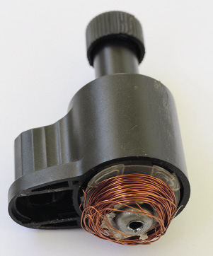
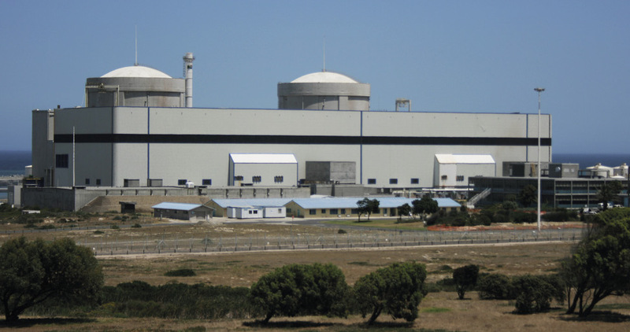
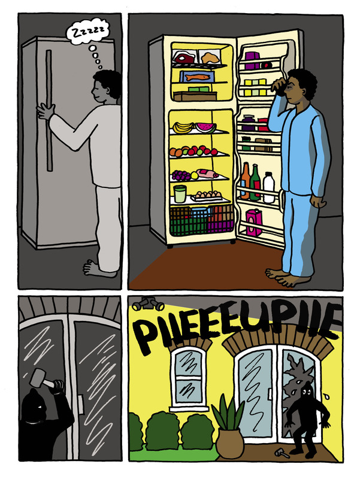

<div class="container">
  <div id="contents" class="col-md-12 main-content"><h1 xmlns="http://www.w3.org/1999/xhtml" id="toc-id-13">Generating electricity for the nation</h1>
 


  
    <p xmlns="http://www.w3.org/1999/xhtml" class="x--Body-opener">In this chapter, you will learn about
    the various ways in which electricity is generated in different
    types of power stations. You will also compare the advantages
    and disadvantages of different types of power stations.</p>

    <p xmlns="http://www.w3.org/1999/xhtml" class="x--Body-opener">You will learn how electricity is
    distributed from the power stations to different parts of the
    country, to reach the people who use it.</p>

   
<figure xmlns="http://www.w3.org/1999/xhtml">
    
    <figcaption>Figure 1: The locations of different
    types of power stations across the country</figcaption></figure><h2 xmlns="http://www.w3.org/1999/xhtml" id="toc-id-14">How electricity is generated in coal-power stations</h2>

    <p xmlns="http://www.w3.org/1999/xhtml" class="x--Body-Text">When you switch a light on, where does
    the energy in the bulb come from? You can control the energy
    with a switch, but what is behind the switch?</p>

    <p xmlns="http://www.w3.org/1999/xhtml" class="x--Body-indent">In this chapter, you will find the
    answer to these questions, and find out where the power is
    generated. Before you investigate the country's electricity
    supply, you will look at the ways electricity can be generated,
    and how this affects your daily life.</p>

    <p xmlns="http://www.w3.org/1999/xhtml" class="x--Body-indent">South Africa uses many power stations
    for its electricity supply. There are different types of power
    stations: coal, nuclear, hydroelectric, gas, wind and solar.
    Figure 1 shows where in South Africa these different types of
    power stations are located.</p>

    <p xmlns="http://www.w3.org/1999/xhtml" class="x--Body-indent">There are no solar-power stations in
    South Africa yet, but plans are in progress to start building
    it.</p>

    <p xmlns="http://www.w3.org/1999/xhtml" class="x--Body-indent">You will start this week by learning
    about coal-power stations for two reasons:</p>

    <ul xmlns="http://www.w3.org/1999/xhtml"><li class="x--Body-text-bullet">Most of the electricity in
      the country, about 85%, is generated by coal-power
      stations.</li>

      <li class="x--Body-text-bullet">Coal-power stations use the
      technologies of generators and turbines that are also used in
      most other types of power stations.</li>
    </ul><h4 xmlns="http://www.w3.org/1999/xhtml">Generators</h4>

    <p xmlns="http://www.w3.org/1999/xhtml" class="x--Body-Text">There are three main systems that give
    us energy for lights, computers, cell phones and all other
    electrical appliances. You can get energy from batteries,
    photo-voltaic panels and generators.</p>

    <p xmlns="http://www.w3.org/1999/xhtml" class="x--Body-indent">The main source of electricity in
    South Africa comes from large generators. These work exactly
    the same as any small generator you might come across. It is
    important to understand how a generator works as it is used in
    most types of power stations.</p>

    <p xmlns="http://www.w3.org/1999/xhtml" class="x--Body--above"><b>How a generator works</b></p>

    <p xmlns="http://www.w3.org/1999/xhtml" class="x--Body-indent-1-3 para-style-override-36">If you
    move a magnet near a coil of copper wire, you will create a
    voltage across the end of the copper wire. Look at Figure
    2.</p>

    <p xmlns="http://www.w3.org/1999/xhtml" class="x--Body-indent-1-3 para-style-override-37">If you
    connect a bulb across the ends of the wire, a current will flow
    around the circuit. To make the current bigger, you can use
    more copper wire in the coils, use a stronger magnet, or move
    the magnet faster.</p>

    <div xmlns="http://www.w3.org/1999/xhtml"><figure>

      
        <figcaption>Figure 2: A home-made generator</figcaption></figure></div>


    <p xmlns="http://www.w3.org/1999/xhtml" class="x--Body-indent">If the person in the picture leaves
    the magnet on the table, how much current will flow in the
    circuit? Your answer can be "a big current", "no current" or "a
    small current". Give a reason for your answer.</p>
    <hr xmlns="http://www.w3.org/1999/xhtml"/><p xmlns="http://www.w3.org/1999/xhtml" class="x--Body-indent-1-3 para-style-override-33">Now look
    at the girl on the bicycle. She is pedalling fast and has a
    generator connected to the back wheel of her bicycle. A bicycle
    generator is also called a "dynamo".</p>

    <p xmlns="http://www.w3.org/1999/xhtml" class="x--Body-indent-1-3 para-style-override-38">The dynamo
    gives energy to the lamp only when the roller is spinning. The
    girl on the bicycle has to pedal faster than usual since she is
    transferring some of her energy to the dynamo, which not only
    makes her wheels move, but also lights the lamp.</p>

    <div xmlns="http://www.w3.org/1999/xhtml"><figure>

      
      <figcaption>Figure 3: The dynamo on a bicycle</figcaption></figure></div>

    <p xmlns="http://www.w3.org/1999/xhtml" class="x--Body-indent">If you open a dynamo, you will see
    that it has copper coils similar to the drawing in Figure 2. As
    the girl pedals, the copper coils spin inside the magnets, and
    this movement generates electricity.</p>

    <div xmlns="http://www.w3.org/1999/xhtml"><figure>

      <figcaption>Figure 4: A bicycle dynamo and light
      attachment</figcaption></figure><figure>
       
    <figcaption>Figure 5: The exposed copper coils in a dynamo</figcaption></figure></div>

    <p xmlns="http://www.w3.org/1999/xhtml" class="x--Body-indent">Power stations have big dynamos
    called generators. They work exactly the same way as the dynamo
    in the pictures above but are much, much bigger! They also
    require a lot more energy to turn than only one person
    pedalling. In the next section, you will learn the various ways
    energy is provided to these big dynamos.</p>

    <h4 xmlns="http://www.w3.org/1999/xhtml">Thermal power stations</h4>

    <p xmlns="http://www.w3.org/1999/xhtml" class="x--Body-Text">Thermal means "caused by heat". In
    thermal power stations, turbines are driven by steam. The steam
    is formed by evaporating water through a source of heat. The
    water is heated to form high-pressure steam by using a heat
    source such as burning coal or gas, nuclear reactions, or light
    from the sun. The water is turned into steam that drives a
    turbine, which makes an electrical generator turn. An
    electrical generator can also be called an "alternator". After
    the steam has been used, it is cooled down so that the water
    can be used again.</p>

    <p xmlns="http://www.w3.org/1999/xhtml" class="x--Body-indent-1-3">Most of the world's energy comes
    from burning <b>fossil fuels</b> such as coal, oil or natural gas. This results in
    high levels of air pollution, particularly from greenhouse
    gases that contribute to climate change. Fossil fuels will run
    out in the future.</p>

    <div xmlns="http://www.w3.org/1999/xhtml" class="aside">
      <p class="x--Body-box-no-indent"><b>Fossil fuels</b> are carbon-based
      fuels that are taken from the earth, and are made of the
      remains of living things that died millions of years ago.</p>
    </div>
<figure xmlns="http://www.w3.org/1999/xhtml"> 

    <figcaption>Figure 6: A
    coal-fired power station</figcaption></figure><h4 xmlns="http://www.w3.org/1999/xhtml">Coal-fired power stations</h4>

    <p xmlns="http://www.w3.org/1999/xhtml" class="x--Body-Text">The energy conversion process starts
    with the burning of coal that generates heat to convert water
    into steam at a very high temperature and pressure. The heat
    and pressure energy contained in the steam is used to drive the
    turbines, converting it into a rotational movement, in other
    words kinetic energy. You saw an example of this with the
    bicycle dynamo − it is exactly the same
    process. There is a generator attached to the turbine
    shaft.</p>

    <ul xmlns="http://www.w3.org/1999/xhtml"><li class="x--Body-text-bullet"><b>Reasons for using coal as an energy source</b></li>
    </ul><p xmlns="http://www.w3.org/1999/xhtml" class="x--Body-indent">For centuries, coal was the only fuel
    source available in large quantities. Power stations were built
    near coal mines so that coal did not have to be transported
    over long distances.</p>

    <p xmlns="http://www.w3.org/1999/xhtml" class="x--Body-indent">Most of the coal-fired power stations
    in South Africa are found in Mpumalanga where huge coal
    deposits were discovered. Coal-power stations are the cheapest
    way to generate electricity. It is even cheaper in South Africa
    since the coal here is close to the surface and therefore easy
    to mine.</p>

    <ul xmlns="http://www.w3.org/1999/xhtml"><li class="x--Body-text-bullet"><b>Impact on the environment</b></li>
    </ul><p xmlns="http://www.w3.org/1999/xhtml" class="x--Body-indent">Burning fossil fuels creates air
    pollution due to the carbon dioxide that is emitted during the
    process. The fires needed to produce steam from water emit a
    lot of carbon dioxide into the air, a lot more than a wood or
    coal fire in your home does. Coal has been used for centuries
    to generate heat.</p>

    <p xmlns="http://www.w3.org/1999/xhtml" class="x--Body-indent">Sulphur dioxide and nitrogen oxide
    are two other gases emitted from coal-fired power stations that
    have a negative impact on the environment. Newer power stations
    use specific technologies to trap these gases so that they are
    not released into the atmosphere. In the past, when these two
    gases were released from coal-fired power stations, they caused
    "acid rain". Acid rain is rain that contains high levels of
    sulphuric or nitric acid, caused by the water mixing with
    sulphur dioxide and nitrogen oxide.</p>

    <p xmlns="http://www.w3.org/1999/xhtml" class="x--Body-indent">Scientists and engineers are working
    on plans to capture carbon dioxide and store it underground,
    but this is expensive and has not yet been done on a large
    scale anywhere in the world.</p>

    <h3 xmlns="http://www.w3.org/1999/xhtml">Questions on coal-fired power stations</h3>

    <p xmlns="http://www.w3.org/1999/xhtml" class="x--Body-investigation-hanging para-style-override-17">1. Write
    what you see as the positive and negative aspects of using this
    type of fossil fuel to generate electricity.</p>

    <table xmlns="http://www.w3.org/1999/xhtml" id="table-18" class="No-Table-Style"><tbody><tr class="Row-Column-36"><td class="cell-style-override-5">
            <p class="x--Body-Text para-style-override-3"><b>Positive</b></p>
          </td>

          <td class="cell-style-override-5">
            <p class="x--Body-Text para-style-override-3"><b>Negative</b></p>
          </td>
        </tr><tr class="Row-Column-95"><td class="cell-style-override-5">
            <p class="x--Answertext" xml:lang="en-GB"/>
          </td>

          <td class="cell-style-override-5">
            <p class="x--Answertext" xml:lang="en-GB"/>
          </td>
        </tr><tr class="Row-Column-96"><td class="cell-style-override-5">
            <p class="x--Answertext" xml:lang="en-GB"/>
          </td>

          <td class="cell-style-override-5">
            <p class="x--Answertext" xml:lang="en-GB"/>
          </td>
        </tr><tr class="Row-Column-96"><td class="cell-style-override-5">
            <p class="x--Answertext" xml:lang="en-GB"/>
          </td>

          <td class="cell-style-override-5">
            <p class="x--Answertext" xml:lang="en-GB"/>
          </td>
        </tr><tr class="Row-Column-96"><td class="cell-style-override-5"/>

          <td class="cell-style-override-5">
            <p class="x--Answertext" xml:lang="en-GB"/>
          </td>
        </tr><tr class="Row-Column-96"><td class="cell-style-override-5"/>

          <td class="cell-style-override-5">
            <p class="x--Answertext" xml:lang="en-GB"/>
          </td>
        </tr><tr class="Row-Column-96"><td class="cell-style-override-5"/>

          <td class="cell-style-override-5">
            <p class="x--Answertext" xml:lang="en-GB"/>
          </td>
        </tr></tbody></table><p xmlns="http://www.w3.org/1999/xhtml" class="x--Body-investigation-hanging">2. What is the energy
    source mainly used in South Africa for conversion into
    electrical energy?</p>
    <hr xmlns="http://www.w3.org/1999/xhtml"/><p xmlns="http://www.w3.org/1999/xhtml" class="x--Body-investigation-hanging">3. Why do you think
    the energy source in question 2 above is not the ideal energy
    source to be used?</p>
    <hr xmlns="http://www.w3.org/1999/xhtml"/><h2 xmlns="http://www.w3.org/1999/xhtml" id="toc-id-15">Other types of power stations</h2>

    <p xmlns="http://www.w3.org/1999/xhtml" class="x--Body-Text">Your teacher will divide the class into
    five groups, A to E. Each group will do the reading and
    questions for only one other type of power station.
    <b>Work individually.</b></p>

    <h4 xmlns="http://www.w3.org/1999/xhtml">Topic A: Gas-turbine power stations</h4>

    <p xmlns="http://www.w3.org/1999/xhtml" class="x--Body-Text">As an alternative to coal, the water in
    a power station can be turned into high-pressure steam using
    burning gas. Gas is also a fossil fuel, and is normally found
    underground in areas where coal or oil is present.</p>

    <p xmlns="http://www.w3.org/1999/xhtml" class="x--Body-indent-1-3">Gas turbines in South Africa are
    equipped to burn a variety of fuels, ranging from oil to gas.
    Gas turbines have advantages over coal-burning power stations
    because of their design. Maintenance is done considerably
    faster, resulting in continuous availability of power.</p>

    <p xmlns="http://www.w3.org/1999/xhtml" class="x--Body-indent">Gas turbines are also capable of
    being started without an outside power source, which is very
    important. If the <b>national grid</b> had to suffer a complete breakdown, the gas
    turbines can be started and will generate power to start the
    other power stations.</p>

    <div xmlns="http://www.w3.org/1999/xhtml" class="aside">
      <p class="x--Body-box-no-indent">The <b>national grid</b> is the network
      of transmission lines that are connected and supplied by all
      the power stations in the country.</p>
    </div>

    <p xmlns="http://www.w3.org/1999/xhtml" class="x--Body-indent">There are four gas-turbine power
    stations in South Africa.</p>

  <figure xmlns="http://www.w3.org/1999/xhtml"> 

   <figcaption>Figure 7: A gas-turbine power station</figcaption></figure><p xmlns="http://www.w3.org/1999/xhtml" class="x--Body-Text para-style-override-3"><b>The future of gas
    turbines</b></p>

    <p xmlns="http://www.w3.org/1999/xhtml" class="x--Body-indent para-style-override-2">South Africa
    has only recently started using gas for power stations so there
    is still a supply that will last for many years. Two of the new
    gas-turbine power stations, Ankerlig in Atlantis, and Gourikwa
    in Mossel Bay, both in the Western Cape, are going to double
    the size of their generators in the next few years, adding a
    lot of power to the national grid.</p>

    <p xmlns="http://www.w3.org/1999/xhtml" class="x--Body-Text para-style-override-3"><b>Reasons for using
    this type of energy source</b></p>

    <p xmlns="http://www.w3.org/1999/xhtml" class="x--Body-indent-1-3">As explained earlier, the ability
    to start a power station without power from the same network is
    very important for the national grid. There is still plenty of
    gas available in the world, however, in South Africa only small
    amounts can be mined. After pipes have been placed into a
    <b>gas field</b> it will
    supply the power station without needing to be mined or
    transported.</p>

    <div xmlns="http://www.w3.org/1999/xhtml" class="aside">
      <p class="x--Body-box-no-indent">A <b>gas field</b> is an underground
      area where organic matter has decayed to form large pockets
      of gas trapped by layers of rock.</p>
    </div>

    <p xmlns="http://www.w3.org/1999/xhtml" class="x--Body-Text para-style-override-3"><b>Impact on the
    environment</b></p>

    <p xmlns="http://www.w3.org/1999/xhtml" class="x--Body-indent">Burning gas produces much less
    sulphur dioxide, nitrogen oxide and ash than burning coal. But
    it is a fossil fuel, so it still produces carbon dioxide
    pollution.</p>

    <p xmlns="http://www.w3.org/1999/xhtml" class="x--Body-indent">Do you think gas-burning power
    stations will have a big impact on generating electricity in
    South Africa?</p>

    <h3 xmlns="http://www.w3.org/1999/xhtml">Questions on gas-turbine power stations</h3>

    <p xmlns="http://www.w3.org/1999/xhtml" class="x--Body-investigation-hanging para-style-override-39">1. Write
    down the positive and negative impacts you think burning gas
    for electricity will have.</p>

    <table xmlns="http://www.w3.org/1999/xhtml" id="table-19" class="No-Table-Style"><tbody><tr class="Row-Column-36"><td class="cell-style-override-5">
            <p class="x--Body-Text para-style-override-3"><b>Positive</b></p>
          </td>

          <td class="cell-style-override-5">
            <p class="x--Body-Text para-style-override-3"><b>Negative</b></p>
          </td>
        </tr><tr class="Row-Column-95"><td class="cell-style-override-5">
            <p class="x--Answertext" xml:lang="en-GB"/>
          </td>

          <td class="cell-style-override-5">
            <p class="x--Answertext" xml:lang="en-GB"/>
          </td>
        </tr><tr class="Row-Column-95"><td class="cell-style-override-5">
            <p class="x--Answertext" xml:lang="en-GB"/>
          </td>

          <td class="cell-style-override-5">
            <p class="x--Answertext" xml:lang="en-GB"/>
          </td>
        </tr><tr class="Row-Column-95"><td class="cell-style-override-5"/>

          <td class="cell-style-override-5">
            <p class="x--Answertext" xml:lang="en-GB"/>
          </td>
        </tr><tr class="Row-Column-64"><td class="cell-style-override-5"/>

          <td class="cell-style-override-5">
            <p class="x--Answertext" xml:lang="en-GB"/>
          </td>
        </tr></tbody></table><h4 xmlns="http://www.w3.org/1999/xhtml">Topic B: Nuclear power stations</h4>

 <figure xmlns="http://www.w3.org/1999/xhtml"> 

    <figcaption>Figure 8: A nuclear power station</figcaption></figure><p xmlns="http://www.w3.org/1999/xhtml" class="x--Body-Text">There is a nuclear power station,
    called Koeberg, close to Cape Town.</p>

    <p xmlns="http://www.w3.org/1999/xhtml" class="x--Body-indent-1-3">Unlike gas-burning or
    coal-burning power stations, a nuclear power station operates
    using three separate water systems. One of the biggest fears
    that people have about nuclear power stations is that
    <b>radioactive</b> material
    might escape and pollute the air of nearby areas.</p>

    <div xmlns="http://www.w3.org/1999/xhtml" class="aside">
      <p class="x--Body-box-no-indent"><b>Radioactive</b> substances give
      off energy that is dangerous to living things. It can cause
      cancer and other health risks, so it is important that people
      are shielded from radioactive material.</p>
    </div>

    <p xmlns="http://www.w3.org/1999/xhtml" class="x--Body-indent">It is very important for the three
    systems to beseparate. The first system, the radioactive water
    in thereactor, is in a closed system. It does not come into
    contact with the other two systems and therefore does not
    contaminate the water in these systems. The second water system
    cools down the radioactive steam that has driven the turbines.
    It flows through the condensers where the third water system
    cools the steam back into water. The first water system
    circulates back to the steam generator where it is turned into
    steam again.</p>

    <p xmlns="http://www.w3.org/1999/xhtml" class="x--Body-indent">The third cooling system for the
    condensers uses sea water at a rate of 80 tons per second to
    cool the steam. After it has cooled down, the steam is returned
    to the sea.</p>

    <ul xmlns="http://www.w3.org/1999/xhtml"><li class="x--Body-text-bullet"><b>Reasons for using this type of energy source</b></li>
    </ul><p xmlns="http://www.w3.org/1999/xhtml" class="x--Body-indent">Many places don't have a supply of
    fossil fuels to power generators. Small amounts of nuclear fuel
    can generate enormous amounts of electricity.</p>

    <p xmlns="http://www.w3.org/1999/xhtml" class="x--Body-indent">Nuclear-power stations require very
    little maintenance. Because the water used in the first system
    is recycled, there is very little waste of precious water. The
    cooling water is unpolluted and returned to the sea.</p>

    <ul xmlns="http://www.w3.org/1999/xhtml"><li class="x--Body-text-bullet"><b>Impact on the environment</b></li>
    </ul><p xmlns="http://www.w3.org/1999/xhtml" class="x--Body-indent">Radioactive material creates
    radioactive waste, which is extremely dangerous. Although the
    amount of waste is very small, it remains active and dangerous
    for many thousands of years! There is currently no long-term
    solution for the safe storage of radioactive waste. The best
    solution at the moment is to put it in very thick layers of
    concrete and lead, and bury it where no one is likely to dig it
    up. Many countries do not use nuclear fuel for power since they
    are concerned that even the buried waste will harm the
    environment. Nuclear power has been used around the world since
    the 1950s as an alternative source of energy.</p>

    <h3 xmlns="http://www.w3.org/1999/xhtml">Question on nuclear-power stations</h3>

    <p xmlns="http://www.w3.org/1999/xhtml" class="x--Body-investigation-hanging">1. List the positive
    and negative aspects of this type of energy in the table
    below.</p>

    <table xmlns="http://www.w3.org/1999/xhtml" id="table-20" class="No-Table-Style"><tbody><tr class="Row-Column-36"><td class="cell-style-override-5">
            <p class="x--Body-Text para-style-override-3"><b>Positive</b></p>
          </td>

          <td class="cell-style-override-5">
            <p class="x--Body-Text para-style-override-3"><b>Negative</b></p>
          </td>
        </tr><tr class="Row-Column-93"><td class="cell-style-override-5">
            <p class="x--Answertext" xml:lang="en-GB"/>
          </td>

          <td class="cell-style-override-5">
            <p class="x--Answertext" xml:lang="en-GB"/>
          </td>
        </tr><tr class="Row-Column-64"><td class="cell-style-override-5">
            <p class="x--Answertext" xml:lang="en-GB"/>
          </td>

          <td class="cell-style-override-5">
            <p class="x--Answertext" xml:lang="en-GB"/>
          </td>
        </tr><tr class="Row-Column-95"><td class="cell-style-override-5">
            <p class="x--Answertext" xml:lang="en-GB"/>
          </td>

          <td class="cell-style-override-5">
            <p class="x--Answertext" xml:lang="en-GB"/>
          </td>
        </tr><tr class="Row-Column-95"><td class="cell-style-override-5">
            <p class="x--Answertext" xml:lang="en-GB"/>
          </td>

          <td class="cell-style-override-5">
            <p class="x--Answertext" xml:lang="en-GB"/>
          </td>
        </tr><tr class="Row-Column-93"><td class="cell-style-override-5"/>

          <td class="cell-style-override-5">
            <p class="x--Answertext" xml:lang="en-GB"/>
          </td>
        </tr></tbody></table><h4 xmlns="http://www.w3.org/1999/xhtml">Topic C: Solar power</h4>

    <p xmlns="http://www.w3.org/1999/xhtml" class="x--Body-Text">Solar power means that the heat and
    light of the sun is used as a source of energy. Solar energy is
    a realistic option in South Africa since it is such a sunny
    country. South Africa experiences more sunshine than mostplaces
    in the world, and there is a lot of potential forthe widespread
    use of solar power. Solar power wouldbe a very good idea in
    low-income housing projects,but the initial cost of solar
    energy is very high as largeareas of <b>solar panels</b> are needed.</p>

    <div xmlns="http://www.w3.org/1999/xhtml" class="aside">
      <p class="x--Body-box-no-indent"><b>Solar panels</b>, or photovoltaic
      cells, convert sunlight to electricity.</p>
    </div>

    <p xmlns="http://www.w3.org/1999/xhtml" class="x--Body-indent">Solar energy is a very good
    alternative for areas that are far away from the national grid,
    such as farms, rural clinics and water-pumping stations. In
    these cases, heat can be produced to power generators or
    photovoltaic cells can be used to produce electricity directly
    from sunlight. South Africa does not have a solar-powered plant
    yet, but ESKOM is currently constructing a solar-powered plant
    in Northern Cape. To help you understand how this will work,
    look at Figure 9 below that shows how mirrors and sunlight can
    be used to heat up a can of water.</p>

    <div xmlns="http://www.w3.org/1999/xhtml">
   <figure>
 
    <figcaption>Figure 9: Solar power used to heat water
    in a tin</figcaption></figure><figure>
    <figcaption>Figure 10: Mirrors in a solar-powered power
    stationcan. focus light onto heating towers.</figcaption></figure></div>

    <p xmlns="http://www.w3.org/1999/xhtml" class="x--Body--above"><b>How does a steam-driven solar-power station work?</b></p>

    <p xmlns="http://www.w3.org/1999/xhtml" class="x--Body-indent">The solar-power station shown in
    Figure 10 has thousands of large mirrors, known as
    "heliostats", that move to follow the sun and reflect the heat
    to a point on a tower. Salt water is pumped up the central
    tower, where it is heated to approximately 600 °C.
    This water is then used to generate steam. The steam is used in
    the same way as it is in a coal-power station to generate
    electricity.</p>

    <ul xmlns="http://www.w3.org/1999/xhtml"><li class="x--Body-text-bullet"><b>Reasons for using this type of energy source</b></li>
    </ul><p xmlns="http://www.w3.org/1999/xhtml" class="x--Body-indent">Solar energy is a realistic option in
    any sunny country. Solar energy can be used in areas far away
    from the national grid and can be set up to provide power for
    smaller communities.</p>

    <p xmlns="http://www.w3.org/1999/xhtml" class="x--Body-indent">We could take the pressure off South
    Africa's largely coal-based energy supply by using solar power.
    This would also give the country a larger overall energy
    capacity and help us to achieve our target of a 34% reduction
    in carbon-dioxide emissions by 2020.</p>

    <ul xmlns="http://www.w3.org/1999/xhtml"><li class="x--Body-text-bullet"><b>Impact on the environment</b></li>
    </ul><p xmlns="http://www.w3.org/1999/xhtml" class="x--Body-indent">Solar power produces no pollution.
    However, the power stations can take up a lot of space due to
    the large mirrors. They could be regarded as visual
    pollution.</p>

    <h3 xmlns="http://www.w3.org/1999/xhtml">Question on solar-power stations</h3>

    <p xmlns="http://www.w3.org/1999/xhtml" class="x--Body-investigation-hanging">1. Write the positive
    and negative aspects of using solar power to generate
    electricity in the table below.</p>

    <table xmlns="http://www.w3.org/1999/xhtml" id="table-21" class="No-Table-Style"><tbody><tr class="Row-Column-36"><td class="cell-style-override-5">
            <p class="x--Body-Text para-style-override-3"><b>Positive</b></p>
          </td>

          <td class="cell-style-override-5">
            <p class="x--Body-Text para-style-override-3"><b>Negative</b></p>
          </td>
        </tr><tr class="Row-Column-154"><td class="cell-style-override-5">
            <p class="x--Answertext" xml:lang="en-GB"/>
          </td>

          <td class="cell-style-override-5">
            <p class="x--Answertext" xml:lang="en-GB"/>
          </td>
        </tr><tr class="Row-Column-93"><td class="cell-style-override-5">
            <p class="x--Answertext" xml:lang="en-GB"/>
          </td>

          <td class="cell-style-override-5">
            <p class="x--Answertext" xml:lang="en-GB"/>
          </td>
        </tr><tr class="Row-Column-64"><td class="cell-style-override-5">
            <p class="x--Answertext" xml:lang="en-GB"/>
          </td>

          <td class="cell-style-override-5">
            <p class="x--Answertext" xml:lang="en-GB"/>
          </td>
        </tr><tr class="Row-Column-154"><td class="cell-style-override-5">
            <p class="x--Answertext" xml:lang="en-GB"/>
          </td>

          <td class="cell-style-override-5"/>
        </tr></tbody></table><h4 xmlns="http://www.w3.org/1999/xhtml">Topic D: Hydroelectric-power generation</h4>

    <p xmlns="http://www.w3.org/1999/xhtml" class="x--Body-Text">The flow of water can be used instead
    of steam to drive turbines. In hydroelectric- power stations,
    the potential energy of water stored in a dam is converted into
    electrical energy. There are two different types of
    hydroelectric-power stations.</p>

    <ul xmlns="http://www.w3.org/1999/xhtml"><li class="x--Body-text-bullet">A simple hydroelectric-power
      station uses the downwards flow of water to generate
      electricity.</li>

      <li class="x--Body-text-bullet">A hydroelectric-pumped
      storage scheme can also pump water back into the dam during
      times when there is electricity from other power stations
      that is not being used. Such a scheme plays the role of a
      rechargeable battery, is it stores electricity when it is not
      being used. It can also be used in the same way as a simple
      hydroelectric-power station to generate electricity, by
      letting water flow downwards out of the dam.</li>
    </ul><p xmlns="http://www.w3.org/1999/xhtml" class="x--Body-indent">Hydroelectricity is renewable and
    does not pollute the environment. Large-scale hydroelectric
    schemes are, however, expensive and require the construction of
    large dams that have an impact on the environment and
    communities. Imagine you lived along a river, and you were
    ordered to move because a hydroelectric dam was to be built
    there. How would you feel about it?</p>

    <p xmlns="http://www.w3.org/1999/xhtml" class="x--Body-indent">Hydroelectric-power stations are able
    to come on line within three minutes. They are therefore
    convenient to use during times of the day when there is a very
    high demand for electricity, when this demand is more than the
    other power stations can provide.</p>

    <p xmlns="http://www.w3.org/1999/xhtml" class="x--Body-indent">Unfortunately, due to South Africa's
    limited water resources, only a small amount of electricity can
    be generated by hydroelectric-power stations.</p>
<figure xmlns="http://www.w3.org/1999/xhtml"> 

    <figcaption>Figure 11: A
    typical hydroelectric-power plant</figcaption></figure><ul xmlns="http://www.w3.org/1999/xhtml"><li class="x--Body-text-bullet"><b>Reasons for using this type of energy source</b></li>
    </ul><p xmlns="http://www.w3.org/1999/xhtml" class="x--Body-indent">It is a renewable energy source and
    can be used to ensure the country has enough electricity during
    periods of high electricity consumption. Hydroelectric-power
    stations are cheap to operate, even cheaper than coal-fired
    power stations.</p>

    <ul xmlns="http://www.w3.org/1999/xhtml"><li class="x--Body-text-bullet"><b>Impact on the environment</b></li>
    </ul><p xmlns="http://www.w3.org/1999/xhtml" class="x--Body-indent">Dams and waterways need to be
    constructed for a hydroelectric-power station. It may be cheap
    to produce the electricity once the dam is completed, but the
    costs of building a dam are enormous, and the impact on the
    countryside can be severe.</p>

    <p xmlns="http://www.w3.org/1999/xhtml" class="x--Body-indent">An environmental impact plan must be
    in place, and communities that could be affected have to be
    taken into consideration. Some people may even have to move
    because their houses and farms are located where the dam will
    be built.</p>

    <h3 xmlns="http://www.w3.org/1999/xhtml">Question on hydroelectric-power stations</h3>

    <p xmlns="http://www.w3.org/1999/xhtml" class="x--Body-investigation-hanging">1. In the table below,
    write down the positive and negative aspects of a
    hydroelectric-power station.</p>

    <table xmlns="http://www.w3.org/1999/xhtml" id="table-22" class="No-Table-Style"><tbody><tr class="Row-Column-36"><td class="cell-style-override-5">
            <p class="x--Body-Text para-style-override-3"><b>Positive</b></p>
          </td>

          <td class="cell-style-override-5">
            <p class="x--Body-Text para-style-override-3"><b>Negative</b></p>
          </td>
        </tr><tr class="Row-Column-95"><td class="cell-style-override-5">
            <p class="x--Answertext" xml:lang="en-GB"/>
          </td>

          <td class="cell-style-override-5">
            <p class="x--Answertext" xml:lang="en-GB"/>
          </td>
        </tr><tr class="Row-Column-64"><td class="cell-style-override-5">
            <p class="x--Answertext" xml:lang="en-GB"/>
          </td>

          <td class="cell-style-override-5">
            <p class="x--Answertext" xml:lang="en-GB"/>
          </td>
        </tr><tr class="Row-Column-70"><td class="cell-style-override-5"/>

          <td class="cell-style-override-5"/>
        </tr><tr class="Row-Column-93"><td class="cell-style-override-5">
            <p class="x--Answertext" xml:lang="en-GB"/>
          </td>

          <td class="cell-style-override-5">
            <p class="x--Answertext" xml:lang="en-GB"/>
          </td>
        </tr><tr class="Row-Column-64"><td class="cell-style-override-5">
            <p class="x--Answertext" xml:lang="en-GB"/>
          </td>

          <td class="cell-style-override-5"/>
        </tr></tbody></table><h4 xmlns="http://www.w3.org/1999/xhtml">Topic E: Wind turbines</h4>

    <p xmlns="http://www.w3.org/1999/xhtml" class="x--Body-text-1-3 para-style-override-30">For
    thousands of years, people have used windmills and energy
    derived from the wind to pump water and to grind mealies. After
    a breakthrough by scientists, wind can now also be used to
    generate electricity. Like the sun and water flowing down a
    river, this is a renewable energy source and does not
    negatively impact the environment or pollute it. Across the
    world, wind farms are being built. These are areas where wind
    is used to turn huge windmills that generate electricity.</p>

    <p xmlns="http://www.w3.org/1999/xhtml" class="x--Body-indent-1-3 para-style-override-30">Wind speed
    and direction change from day to day, depending on the weather
    and the season. When something changes in an unpredictable way,
    it is called "erratic". The patterns of wind direction and wind
    speed are studied and used for electricity generation in areas
    that have consistent winds. This does not mean that there has
    to be strong winds or gales for the system to work. What is
    needed is a steady wind that won't damage the machinery.</p>

    <div xmlns="http://www.w3.org/1999/xhtml">
     <figure>

      
        <figcaption>Figure 12: A big new wind turbine
        behind a much smaller, old wind pump</figcaption></figure></div>

    <p xmlns="http://www.w3.org/1999/xhtml" class="x--Body-indent">In South Africa, research on the
    potential of wind energy as an electricity- generating option
    was carried out in various places. Different ways of generating
    electricity through wind were studied. An important factor is
    cost. It doesn't make sense to put systems in place that will
    make electricity too expensive to buy.</p>

    <p xmlns="http://www.w3.org/1999/xhtml" class="x--Body-indent">After investigating all the options,
    ESKOM started the Klipheuwel Windfarm Research Facility on the
    West Coast near Cape Town in 2002.</p>

    <p xmlns="http://www.w3.org/1999/xhtml" class="x--Body-indent">The generators need wind speeds of
    between 47 km and 57 km per hour for full power operation, but
    they can start generating electricity in winds as low as 11 km
    per hour. If a gale force wind blows, the turbines shut off
    automatically at winds over 90 km per hour to prevent damage to
    the generators.</p>

    <p xmlns="http://www.w3.org/1999/xhtml" class="x--Body-indent">Wind is an erratic resource that is
    not always available when needed.</p>

    <ul xmlns="http://www.w3.org/1999/xhtml"><li class="x--Body-text-bullet"><b>Reasons for using this type of energy source</b></li>
    </ul><p xmlns="http://www.w3.org/1999/xhtml" class="x--Body-indent">Wind is a renewable energy source,
    and is particularly powerful in coastal areas. It can be used
    where fossil fuels are unavailable. These conditions are best
    along the coastlines.</p>

    <ul xmlns="http://www.w3.org/1999/xhtml"><li class="x--Body-text-bullet"><b>Impact on the environment</b></li>
    </ul><p xmlns="http://www.w3.org/1999/xhtml" class="x--Body-indent">While it is a clean source of energy
    in terms of greenhouse gases, environmental impacts can include
    noise, visual pollution as well as affecting birdlife. The
    farms need large pieces of land, which in some places can be
    expensive to buy.</p>

    <h3 xmlns="http://www.w3.org/1999/xhtml">Questions on wind turbines</h3>

    <p xmlns="http://www.w3.org/1999/xhtml" class="x--Body-investigation-hanging">1. Do you think ESKOM
    should build more wind turbines?</p>
    <hr xmlns="http://www.w3.org/1999/xhtml"/><p xmlns="http://www.w3.org/1999/xhtml" class="x--Body-investigation-hanging">2. Write down the
    positive and negative aspects of this form of generating
    electricity in the table below.</p>

    <table xmlns="http://www.w3.org/1999/xhtml" id="table-23" class="No-Table-Style"><tbody><tr class="Row-Column-36"><td class="cell-style-override-5">
            <p class="x--Body-Text para-style-override-3"><b>Positive</b></p>
          </td>

          <td class="cell-style-override-5">
            <p class="x--Body-Text para-style-override-3"><b>Negative</b></p>
          </td>
        </tr><tr class="Row-Column-95"><td class="cell-style-override-5">
            <p class="x--Answertext" xml:lang="en-GB"/>
          </td>

          <td class="cell-style-override-5">
            <p class="x--Answertext" xml:lang="en-GB"/>
          </td>
        </tr><tr class="Row-Column-93"><td class="cell-style-override-5">
            <p class="x--Answertext" xml:lang="en-GB"/>
          </td>

          <td class="cell-style-override-5">
            <p class="x--Answertext" xml:lang="en-GB"/>
          </td>
        </tr><tr class="Row-Column-95"><td class="cell-style-override-5">
            <p class="x--Answertext" xml:lang="en-GB"/>
          </td>

          <td class="cell-style-override-5">
            <p class="x--Answertext" xml:lang="en-GB"/>
          </td>
        </tr><tr class="Row-Column-95"><td class="cell-style-override-5">
            <p class="x--Answertext" xml:lang="en-GB"/>
          </td>

          <td class="cell-style-override-5">
            <p class="x--Answertext" xml:lang="en-GB"/>
          </td>
        </tr></tbody></table><h2 xmlns="http://www.w3.org/1999/xhtml" id="toc-id-16">Transmission of electricity across the country</h2>

    <p xmlns="http://www.w3.org/1999/xhtml" class="x--Body-Text">The electricity that power stations
    generate is distributed across the whole country.</p>

    <p xmlns="http://www.w3.org/1999/xhtml" class="x--Body-indent-1-3">The map on the next page shows
    the main <b>transmission</b> lines that are used
    to <b>distribute</b>
    electricity from the power stations to different parts of the
    country.</p>

    <div xmlns="http://www.w3.org/1999/xhtml" class="aside">
      <p class="x--Body-box-no-indent"><b>Transmission</b> means the action
      or process of sending something.</p>

      <p class="x--Body-box-no-indent"><b>Distribution</b> refers to the
      action of sharing something among a number of recipients.</p>
    </div>

    <p xmlns="http://www.w3.org/1999/xhtml" class="x--Body-indent-1-3">The combination of the
    transmission and the distribution cables form a network called
    the national grid. Electricity is fed into the national grid,
    and it has to be distributed across the country to cities,
    towns and rural areas.</p>

    <p xmlns="http://www.w3.org/1999/xhtml" class="x--Body-indent">The South African government
    announced its policy to provide free basic services to the poor
    in 2000. The government has focused mainly on electricity
    supply, which has led to a higher demand on our national
    grid.</p>

    <p xmlns="http://www.w3.org/1999/xhtml" class="x--Body-indent">Electricity supply must be consistent
    and reliable, since electric equipment can be damaged if there
    are changes in the voltage and current.</p>

    <p xmlns="http://www.w3.org/1999/xhtml" class="x--Body-indent">It is very difficult to store large
    quantities of electrical energy. The energy provider must
    always match the demand of the consumers. These consumers range
    from households to huge factories, transport systems and the
    use of heavy machinery.</p>

    <p xmlns="http://www.w3.org/1999/xhtml" class="x--Body-indent">Specific equipment has to be
    installed to ensure that the correct voltages reach the users.
    In this section, you are going to learn about this type of
    equipment.</p>

    <p xmlns="http://www.w3.org/1999/xhtml" class="x--Body-indent">As the demand increases, more power
    stations must be brought on line. This means that the power
    they generate needs to be added to the national grid.</p>

    <p xmlns="http://www.w3.org/1999/xhtml" class="x--Body-indent-1-3">It is interesting to note that
    the electricity demand not only varies from day to day, but
    from minute to minute. The <b>peak demand</b> periods are early in
    the morning and in the evening.</p>

    <div xmlns="http://www.w3.org/1999/xhtml" class="aside">
      <p class="x--Body-box-no-indent"><b>Peak demand</b> means the highest
      demand during a day.</p>
    </div>

    <p xmlns="http://www.w3.org/1999/xhtml" class="x--Body-indent"><span>These pylons transmit
    high</span>-voltage current between the power stations and the
    substations.</p>

    <figure xmlns="http://www.w3.org/1999/xhtml"> 

    <figcaption>Figure 13: Map of
    electricity transmission in South Africa. Notice that the grid
    does not reach all rural areas. Electricity is generated
    locally in these places.</figcaption></figure><h4 xmlns="http://www.w3.org/1999/xhtml">Step-down and step-up transformers</h4>

    <p xmlns="http://www.w3.org/1999/xhtml" class="x--Body-Text">Electricity is transferred from power
    stations to consumers over long distances through the wires and
    cables of the national grid. When a current flows through a
    wire, a bit of energy is lost in the form of heat. The higher
    the current, the more energy is lost. To reduce these losses,
    the national grid transmits electricity at a low current, but
    this requires a high voltage. Remember Ohm's law!</p>

    <p xmlns="http://www.w3.org/1999/xhtml" class="x--Body-indent">Step-up transformers are used at
    power stations to produce the very high voltages needed to
    transmit electricity through the national grid's power lines.
    When the electric energy reaches the consumer area, it is
    transformed, which means changed, to a lower and safer voltage.
    Step-down transformers are used locally in sub-stations to
    reduce the voltage to safe levels.</p>

    <p xmlns="http://www.w3.org/1999/xhtml" class="x--Body-indent para-style-override-5">If you don't
    quite understand this, think of water flowing through apipe.
    The wider the pipe, the more water can be pushed through. When
    it reaches the other end, the water is funnelled into smaller
    pipes to be used in homes and factories. The same principle is
    used to distribute electricity.</p>

    <div xmlns="http://www.w3.org/1999/xhtml" class="note">
      
      <ul><li class="x--Body-text-bullet">A transformer that
        increases the voltage is called "a step-up
        transformer".</li>

        <li class="x--Body-text-bullet">A transformer that
        decreases the voltage is called "a step-down
        transformer".</li>
      </ul></div>

    <p xmlns="http://www.w3.org/1999/xhtml" class="x--Body-indent">Figure 14 shows how electricity
    reaches your house so that you can turn on the lights and watch
    educational programmes on your television.</p>

    <figure xmlns="http://www.w3.org/1999/xhtml"> 

    <figcaption>Figure 14: The path of electricity to
    your home</figcaption></figure><h3 xmlns="http://www.w3.org/1999/xhtml">What have you learnt?</h3>

    <p xmlns="http://www.w3.org/1999/xhtml" class="x--Body-investigation-hanging">1. Name three
    renewable ways in which electricity can be generated.</p>
    <hr xmlns="http://www.w3.org/1999/xhtml"/><p xmlns="http://www.w3.org/1999/xhtml" class="x--Body-investigation-hanging">2. What is the
    national electrical energy grid?</p>
    <hr xmlns="http://www.w3.org/1999/xhtml"/><div xmlns="http://www.w3.org/1999/xhtml" class="aside">
      <p class="x--Body-box-no-indent">The national electricity
      energy grid is often simply called the national grid.</p>
    </div>
    <hr xmlns="http://www.w3.org/1999/xhtml"/><p xmlns="http://www.w3.org/1999/xhtml" class="x--Body-investigation-hanging">3. What is the
    function of a transformer?</p>
    <hr xmlns="http://www.w3.org/1999/xhtml"/><p xmlns="http://www.w3.org/1999/xhtml" class="x--Body-investigation-hanging">4. In the area where
    you live, what, in your opinion, will be the most suitable
    energy source to be converted to electricity for your
    community? Why do you say so?</p>
    <hr xmlns="http://www.w3.org/1999/xhtml"/><h3 xmlns="http://www.w3.org/1999/xhtml">Next week</h3>

    <p xmlns="http://www.w3.org/1999/xhtml" class="x--Body-Text">During the next three weeks, you will
    do your mini-PAT for this term. You will design and build an
    alarm system.</p>

<div xmlns="http://www.w3.org/1999/xhtml">
    <h1 id="toc-id-18">Circuits with logic control</h1>
    
    <p class="x--Body-opener">In this chapter, which brings you to
    the end of this term, you will start by revising the circuits
    you made in Chapter 7 at the beginning of this term. Then you
    are going to use this knowledge to make an alarm system for a
    shopkeeper.</p>

    <p class="x--Body-opener">You will only do <b>individual work</b> during this
    Mini-PAT.</p>

    

    <figure> 

    <figcaption>Figure 1: How are
    the systems in this picture controlled?</figcaption></figure><h2 id="toc-id-19">Week 1</h2>

    <h2 id="toc-id-20">Circuit diagrams and ohm's law</h2>

    <p class="x--Body-Text para-style-override-7">This section
    revises the circuits which you learnt about in Chapter 7. You
    found that the more cells you connected in series, the brighter
    the bulb glowed.</p>

    <h3>Revise the effect of connecting more cells in series (45 minutes)</h3>

    <p class="x--Body-Text para-style-override-3"><b>You will
    need:</b></p>

    <ul><li class="x--Body-text-bullet">a cell holder big enough for
      three cells,</li>

      <li class="x--Body-text-bullet">two or three
      <span>crocodile-clip</span> conducting wires, and</li>

      <li class="x--Body-text-bullet">a light bulb rated for 3,8 V
      or slightly more.</li>
    </ul><p class="x--Body--above">Look at the three circuits below:</p>

   <figure> 

    <figcaption>Figure 2: Each cell adds 1,5 V to the
    battery.</figcaption></figure><p class="x--Body-investigation-hanging">1. What voltage does
    the battery in circuit 3 promise to give?</p>
    <hr/><p class="x--Body-investigation-hanging">2. Predict how bright
    the bulbs will glow in circuits 1 to 3. To show your
    prediction, draw brackets around the bulbs in the diagram.
    (<span class="char-style-override-17">⊗</span>) means dim,
    ((<span class="char-style-override-17">⊗</span>)) means
    medium bright and (((<span class="char-style-override-17">⊗</span>))) means
    very bright.</p>

    <p class="x--Body-investigation-hanging">3. Now build each of
    these circuits and test your predictions. Does the bulb in each
    circuit glow as brightly as you predicted it would?</p>

    <p class="x--Body-Text para-style-override-45"><b>The relationship
    between voltage and current</b></p>

    <div class="note">
      <p>If the current through the bulb is small, the bulb
will glow dimly, and if the current is big, the bulb
will glow brightly.
</p></div>

    <p class="x--Body-investigation-hanging">4. Write a sentence
    about the relationship between the voltage and the current. Use
    the following phrases in your sentence:</p>

    <ul><li class="x--Body-text-bullet para-style-override-46">
      <span class="Word-Imported-List-Style3 char-style-override-18"/>
      "across the bulb",</li>

      <li class="x--Body-text-bullet para-style-override-46">
      <span class="Word-Imported-List-Style3 char-style-override-18"/>
      "through the bulb",</li>

      <li class="x--Body-text-bullet para-style-override-46">
      <span class="Word-Imported-List-Style3 char-style-override-18"/>
      "the voltage is",</li>

      <li class="x--Body-text-bullet para-style-override-46">
      <span class="Word-Imported-List-Style3 char-style-override-18"/>
      "the bigger is the current", and</li>

      <li class="x--Body-text-bullet para-style-override-46">
      <span class="Word-Imported-List-Style3 char-style-override-18"/>
      "the bigger".</li>
    </ul><hr/><p class="x--Body-investigation-hanging">5. You can state the
    relationship between current and voltage in another way.
    Complete the following sentence:<span>If you increase
    the __________ across the bulb,
    you also increase the __________ the bulb.</span></p>

    
    <div class="note">
      <p>The sentence above summarises <b>Ohm’s law</b>.
</p></div>

  
    <h3>Revise circuits with resistors in series and parallel (45 minutes)</h3>

    <p class="x--Body-Text"><b>For this</b> <b>activity, you</b> <b>will need:</b></p>

    <ul><li class="x--Body-text-bullet">a battery of three
      cells,</li>

      <li class="x--Body-text-bullet">three bulbs rated for 3,8
      volts, and</li>

      <li class="x--Body-text-bullet">six
      <span>crocodile-clip</span> conducting wires.</li>
    </ul><p class="x--Body-investigation-hanging">1. The diagrams in
    Figure 3 show you the circuits you are going to build. Before
    you build them, show your predictions of how bright the bulbs
    will glow on the diagrams using brackets as you did before.
    Then connect the components and test your predictions.</p>

   <figure> 

    <figcaption>Figure 3: Bulbs connected in series</figcaption></figure><p class="x--Body-investigation-hanging">2. Look at Figure 4,
    and show your predictions of how bright the bulbs will glow
    when they are connected in parallel. Then connect the
    components and test your predictions.</p>

      <figure> 

  <figcaption>Figure 4: Bulbs connected in parallel</figcaption></figure><h3>How a door-operated push switch works (30 minutes)</h3>

    <p class="x--Body-Text">A refrigerator has a light bulb inside
    that lights up when you open the door.</p>

    <p class="x--Body-investigation-hanging">1. Will the light turn
    off when you close the fridge door? Why?</p>
    <hr/><p class="x--Body-investigation-hanging--1-3- para-style-override-49">2.
    Figure 5 shows a photo of a fridge with its door open. On this
    photo, find the switch that controls the light and draw a
    circle around it with your pencil.</p>

    <p class="x--Body-investigation-hanging--1-3- para-style-override-49">3.
    Homework: When you open a fridge at home, press this button in
    to see whether the light goes off.</p>

    <div>
    <figure>

      
        <figcaption>Figure 5: Find the switch for the
        fridge's light.</figcaption></figure></div>

    <div class="note">
      <ul><li class="x--Body-text-bullet">Many push switches turn on
        a circuit when <span>they are</span> pressed in, and turn
        off the circuit when <span>they are</span> is not pressed
        in.</li>

        <li class="x--Body-text-bullet">But the push switch for the
        fridge light works the other way round. It turns off the
        circuit when it is pressed in, and it turns on the circuit
        when it is not pressed in.</li>
      </ul></div>

    <p class="x--Body-text-1-3 para-style-override-50">Figure 6
    shows you how this type of switch works. The switch opens the
    circuit as long as the door is closed.</p>

    <p class="x--Body-investigation-hanging--1-3- para-style-override-51">4.
    What happens when the door moves away from the plastic knob?
    How does the switch complete the circuit?</p>

    <div><figure>

      
        <figcaption>Figure 6: Top view of the parts
        inside a door-operated push switch: The grey parts are
        non-conducting and the yellow parts are conductors.</figcaption></figure></div>
    <hr/><h2 id="toc-id-21">Week 2</h2>

    <h2 id="toc-id-22">Logic gates and truth tables</h2>
    <h2 id="toc-id-23">Design brief and specifications</h2>

    <h3>Switches with and-type control (15 minutes)</h3>

    <p class="x--Body-text-1-3">The circuit in Figure 7 has
    AND-type control. Now let's see where people would use a
    circuit such as this one. Figure 8 shows an electric
    paper-cutting machine that is used to cut many sheets of paper
    simultaneously. An electric motor turns gears that press the
    blade of the machine down to cut the paper.</p>

    <div><figure>

      
        <figcaption>Figure 7: A circuit with AND-type
        control</figcaption></figure></div>

    <p class="x--Body-indent-1-3">A worker who uses the machine
    could easily cut his or her fingers, so the machine has a
    safety system in place.</p>

    <p class="x--Body-indent">To make the blade come down, the
    worker must use both hands to press two <span>switches at the
    same time. If he or she presses only one switch, the blade will
    not move. So the machine will not work unless</span> <span>his
    or her</span> <span>hands are both out of the way.</span></p>

  <figure>
    <figcaption>Figure 8: An electric paper-cutting
    machine</figcaption></figure><div class="note">
      <p>This machine’s circuit has AND-type control. Switch
1 and Switch 2 must both be closed, by pressing
them, before the motor will work.
</p></div>

    
    <h3>Switches with or-type control (15 minutes)</h3>

    <p class="x--Body-text-1-3 para-style-override-55">The circuit
    in Figure 9 has OR-type control. This type of control is used
    to switch on the light inside a car when you open one of the
    front doors. This is very useful when you get in or out of the
    car at night.</p>

    <div><figure>

      
        <figcaption>Figure 9: This circuit has OR-type
        control.</figcaption></figure></div>

    <p class="x--Body-indent-1-3">The light turns on when the
    driver opens the door, and turns off when that door is closed.
    If a passenger gets in at the other front door, the light goes
    on again, even if the driver's door is closed.</p>

    <p class="x--Body-indent">So the car has a circuit that
    switches on the light if <i>either</i> the driver's door is open
    <i>or</i> the passenger's
    door is open. This circuit has OR-type control.</p>

   <figure> 

    <figcaption>Figure 10: The inside light goes on when
    you open one of the front doors.</figcaption></figure><div class="note">
      <p>A car’s cabin light uses OR-type control because
the bulb lights up if either the switch on the driver’s
door or the switch on the passenger’s door is closed
(on). It also lights up if they are both closed (on).
</p></div>

    <p class="x--Body-investigation-hanging">1. Look at the circuit
    in Figure 9. Both the switches are open (off). How can you get
    the bulb to light up? Think of three things you can do with the
    switches.</p>
    <hr/><p class="x--Body-indent para-style-override-13">The
    door-operated switch for the light inside the car is the same
    type of switch used for a fridge light, as shown in Figures 5
    and 6.</p>

    <h3>Truth tables (30 minutes)</h3>

    <p class="x--Body-Text">A computer gives many outputs depending
    on many inputs. To do this, it uses many AND-type and OR-type
    circuits inside a more complicated circuit. The AND and OR
    parts of the complicated circuits are called "logic gates".</p>

    <p class="x--Body-indent">Computer designers and programmers
    need methods to write down all the possible "states" that the
    system can be in. A state is one possible combination of values
    for all the inputs. "Truth tables" help them to write down all
    the possible states. Computers have millions of possible
    states. But to understand the method of truth tables, you only
    need to understand the truth tables of systems with a small
    number of states.</p>

    <p class="x--Body-indent">Look back at Figure <span>8</span>,
    showing the electric paper-cutting machine. The operator has to
    press both switches to make the cutting blade move. So the
    circuit controlling the motor uses AND-type control.</p>

    <p class="x--Body-indent">Below is a truth table for this
    circuit. The inputs are the two switches. Each row of the table
    shows one possible combination of the inputs, and the output
    corresponding with it. So each row shows one possible
    state.</p>

    <table id="table-30" class="No-Table-Style"><tbody><tr class="Row-Column-96"><td class="cell-style-override-4">
            <p class="x--Body-Text para-style-override-11">switch
            1</p>
          </td>

          <td class="cell-style-override-4">
            <p class="x--Body-Text para-style-override-11">switch
            2</p>
          </td>

          <td class="cell-style-override-4">
            <p class="x--Body-Text para-style-override-11">Does the
            blade move?</p>
          </td>
        </tr><tr class="Row-Column-36"><td class="cell-style-override-4">
            <p class="x--Body-Text para-style-override-11">off</p>
          </td>

          <td class="cell-style-override-4">
            <p class="x--Body-Text para-style-override-11">off</p>
          </td>

          <td class="cell-style-override-4">
            <p class="x--Body-Text para-style-override-11">no</p>
          </td>
        </tr><tr class="Row-Column-36"><td class="cell-style-override-4">
            <p class="x--Body-Text para-style-override-11">off</p>
          </td>

          <td class="cell-style-override-4">
            <p class="x--Body-Text para-style-override-11">on</p>
          </td>

          <td class="cell-style-override-4">
            <p class="x--Body-Text para-style-override-11">no</p>
          </td>
        </tr><tr class="Row-Column-36"><td class="cell-style-override-4">
            <p class="x--Body-Text para-style-override-11">on</p>
          </td>

          <td class="cell-style-override-4">
            <p class="x--Body-Text para-style-override-11">off</p>
          </td>

          <td class="cell-style-override-4">
            <p class="x--Body-Text para-style-override-11">no</p>
          </td>
        </tr><tr class="Row-Column-36"><td class="cell-style-override-4">
            <p class="x--Body-Text para-style-override-11">on</p>
          </td>

          <td class="cell-style-override-4">
            <p class="x--Body-Text para-style-override-11">on</p>
          </td>

          <td class="cell-style-override-4">
            <p class="x--Body-Text para-style-override-11">yes</p>
          </td>
        </tr></tbody></table><p class="x--Body-indent">A truth table is sometimes written
    using numbers instead of "on" or "off":</p>

    <ul><li class="x--Body-text-bullet">For the <span>inputs, which
      are the switches, a</span> "1" means "on" and a "0" means
      "off".</li>

      <li class="x--Body-text-bullet">For the outputs, a "1" means
      "yes, it gives the output", and a "0" means "no output".</li>
    </ul><p class="x--Body-investigation-hanging">1. Complete the truth
    table below for the paper-cutting machine's circuit.</p>

    <table id="table-31" class="No-Table-Style"><tbody><tr class="Row-Column-96"><td class="cell-style-override-4">
            <p class="x--Body-Text para-style-override-11">switch
            1</p>
          </td>

          <td class="cell-style-override-4">
            <p class="x--Body-Text para-style-override-11">switch
            2</p>
          </td>

          <td class="cell-style-override-4">
            <p class="x--Body-Text para-style-override-11">
            output (Does the blade move?)</p>
          </td>
        </tr><tr class="Row-Column-36"><td class="cell-style-override-4">
            <p class="x--Body-Text para-style-override-11">0</p>
          </td>

          <td class="cell-style-override-4">
            <p class="x--Body-Text para-style-override-11">0</p>
          </td>

          <td class="cell-style-override-4">
            <p class="x--Body-Text para-style-override-11">0</p>
          </td>
        </tr><tr class="Row-Column-36"><td class="cell-style-override-4">
            <p class="x--Body-Text para-style-override-11">0</p>
          </td>

          <td class="cell-style-override-4">
            <p class="x--Body-Text para-style-override-11">1</p>
          </td>

          <td class="cell-style-override-4">
            <p class="x--Answer-text para-style-override-11" xml:lang="en-GB"/>
          </td>
        </tr><tr class="Row-Column-36"><td class="cell-style-override-4">
            <p class="x--Body-Text para-style-override-11">1</p>
          </td>

          <td class="cell-style-override-4">
            <p class="x--Answer-text para-style-override-11" xml:lang="en-GB"/>
          </td>

          <td class="cell-style-override-4">
            <p class="x--Answer-text para-style-override-11" xml:lang="en-GB"/>
          </td>
        </tr><tr class="Row-Column-36"><td class="cell-style-override-4">
            <p class="x--Body-Text para-style-override-11">1</p>
          </td>

          <td class="cell-style-override-4">
            <p class="x--Answer-text para-style-override-11" xml:lang="en-GB"/>
          </td>

          <td class="cell-style-override-4">
            <p class="x--Answer-text para-style-override-11" xml:lang="en-GB"/>
          </td>
        </tr></tbody></table><p class="x--Body-investigation-hanging">2. Now make a truth
    table for the light inside the car. If any one of the two front
    doors is open, the light is on. So this is a truth table for
    OR-control.</p>

    <table id="table-32" class="No-Table-Style"><tbody><tr class="Row-Column-96"><td class="cell-style-override-4">
            <p class="x--Body-Text para-style-override-11">
            state</p>
          </td>

          <td class="cell-style-override-4">
            <p class="x--Body-Text para-style-override-11">driver
            door switch</p>
          </td>

          <td class="cell-style-override-4">
            <p class="x--Body-Text para-style-override-11">
            passenger door switch</p>
          </td>

          <td class="cell-style-override-4">
            <p class="x--Body-Text para-style-override-11">
            output (Does the light turn on?)</p>
          </td>
        </tr><tr class="Row-Column-94"><td class="cell-style-override-4">
            <p class="x--Body-Text para-style-override-11">only
            driver door open</p>
          </td>

          <td class="cell-style-override-4">
            <p class="x--Body-Text para-style-override-11">1</p>
          </td>

          <td class="cell-style-override-4">
            <p class="x--Body-Text para-style-override-11">0</p>
          </td>

          <td class="cell-style-override-4">
            <p class="x--Answer-text para-style-override-11" xml:lang="en-GB"/>
          </td>
        </tr><tr class="Row-Column-96"><td class="cell-style-override-4">
            <p class="x--Body-Text para-style-override-11">only
            passenger door open</p>
          </td>

          <td class="cell-style-override-4">
            <p class="x--Answer-text para-style-override-11" xml:lang="en-GB"/>
          </td>

          <td class="cell-style-override-4">
            <p class="x--Answer-text para-style-override-11" xml:lang="en-GB"/>
          </td>

          <td class="cell-style-override-4">
            <p class="x--Answer-text para-style-override-11" xml:lang="en-GB"/>
          </td>
        </tr><tr class="Row-Column-96"><td class="cell-style-override-4">
            <p class="x--Body-Text para-style-override-11">both
            driver and passenger doors open</p>
          </td>

          <td class="cell-style-override-4">
            <p class="x--Answer-text para-style-override-11" xml:lang="en-GB"/>
          </td>

          <td class="cell-style-override-4">
            <p class="x--Answer-text para-style-override-11" xml:lang="en-GB"/>
          </td>

          <td class="cell-style-override-4">
            <p class="x--Answer-text para-style-override-11" xml:lang="en-GB"/>
          </td>
        </tr><tr class="Row-Column-180"><td class="cell-style-override-4">
            <p class="x--Body-Text para-style-override-11">no door
            open</p>
          </td>

          <td class="cell-style-override-4">
            <p class="x--Answer-text para-style-override-11" xml:lang="en-GB"/>
          </td>

          <td class="cell-style-override-4">
            <p class="x--Answer-text para-style-override-11" xml:lang="en-GB"/>
          </td>

          <td class="cell-style-override-4">
            <p class="x--Answer-text para-style-override-11" xml:lang="en-GB"/>
          </td>
        </tr></tbody></table><div class="note">
      <p>A truth table shows all the possible states a circuit
can be in, depending on the different combinations
of the inputs.
It is a list of the inputs and the output or outputs
for every possible state.
</p></div>

    

    <h3>Combining and-control with or-control (15 minutes)</h3>

    <p class="x--Body-text-1-3 para-style-override-57">Many buses
    have push switches for passengers to let the driver know they
    want to get off at the next stop. The circuit diagram might
    look like Figure 11. In this circuit diagram, there are two
    push switches for passengers. Any one of these switches can
    ring the bell next to the driver.</p>

    <div><figure>

      
        <figcaption>Figure 11: A circuit for passengers
        to tell the driver that they want to get off</figcaption></figure></div>

    <p class="x--Body-investigation-hanging">1. Write SW1 and SW2
    next to the two switches for the passengers.</p>

    <p class="x--Body-indent">When school learners go on an
    excursion, they sometimes ring the bell many times just for
    fun. This prevents the driver from concentrating on the road,
    so <span>he or she</span> has a "master switch" to turn off the
    bell.</p>

    <p class="x--Body-investigation-hanging">2. Which switch gives
    the bus driver control over the whole circuit? Write SW<sub>master</sub>
    next to that switch.</p>

    <div class="note">
      <p>The passengers have OR-control because switch
SW1 or switch SW2 can ring the bell.
However, the driver has AND-control. For the bell to
ring, SW<sub>master</sub><b>and</b> one of SW1 or SW2 must be on.
</p></div>

    <p class="x--Body-investigation-hanging">3. Complete a truth
    table below for the <span>bell circuit of the bus</span>.</p>

    <table id="table-35" class="No-Table-Style"><tbody><tr class="Row-Column-36"><td class="cell-style-override-4">
            <p class="x--Body-Text para-style-override-11">
            SW<sub>master</sub></p>
          </td>

          <td class="cell-style-override-4">
            <p class="x--Body-Text para-style-override-11">SW1</p>
          </td>

          <td class="cell-style-override-4">
            <p class="x--Body-Text para-style-override-11">SW2</p>
          </td>

          <td class="cell-style-override-4">
            <p class="x--Body-Text para-style-override-11">output
            from the bell</p>
          </td>
        </tr><tr class="Row-Column-36"><td class="cell-style-override-4">
            <p class="x--Body-Text para-style-override-11">1</p>
          </td>

          <td class="cell-style-override-4">
            <p class="x--Body-Text para-style-override-11">0</p>
          </td>

          <td class="cell-style-override-4">
            <p class="x--Body-Text para-style-override-11">0</p>
          </td>

          <td class="cell-style-override-4"/>
        </tr><tr class="Row-Column-36"><td class="cell-style-override-4">
            <p class="x--Body-Text para-style-override-11">1</p>
          </td>

          <td class="cell-style-override-4">
            <p class="x--Body-Text para-style-override-11">1</p>
          </td>

          <td class="cell-style-override-4">
            <p class="x--Body-Text para-style-override-11">0</p>
          </td>

          <td class="cell-style-override-4"/>
        </tr><tr class="Row-Column-36"><td class="cell-style-override-4">
            <p class="x--Body-Text para-style-override-11">1</p>
          </td>

          <td class="cell-style-override-4">
            <p class="x--Body-Text para-style-override-11">0</p>
          </td>

          <td class="cell-style-override-4">
            <p class="x--Body-Text para-style-override-11">1</p>
          </td>

          <td class="cell-style-override-4"/>
        </tr><tr class="Row-Column-36"><td class="cell-style-override-4">
            <p class="x--Body-Text para-style-override-11">1</p>
          </td>

          <td class="cell-style-override-4">
            <p class="x--Body-Text para-style-override-11">1</p>
          </td>

          <td class="cell-style-override-4">
            <p class="x--Body-Text para-style-override-11">1</p>
          </td>

          <td class="cell-style-override-4"/>
        </tr><tr class="Row-Column-36"><td class="cell-style-override-4">
            <p class="x--Body-Text para-style-override-11">0</p>
          </td>

          <td class="cell-style-override-4">
            <p class="x--Body-Text para-style-override-11">0</p>
          </td>

          <td class="cell-style-override-4">
            <p class="x--Body-Text para-style-override-11">0</p>
          </td>

          <td class="cell-style-override-4"/>
        </tr><tr class="Row-Column-36"><td class="cell-style-override-4">
            <p class="x--Body-Text para-style-override-11">0</p>
          </td>

          <td class="cell-style-override-4">
            <p class="x--Body-Text para-style-override-11">1</p>
          </td>

          <td class="cell-style-override-4">
            <p class="x--Body-Text para-style-override-11">0</p>
          </td>

          <td class="cell-style-override-4"/>
        </tr><tr class="Row-Column-36"><td class="cell-style-override-4">
            <p class="x--Body-Text para-style-override-11">0</p>
          </td>

          <td class="cell-style-override-4">
            <p class="x--Body-Text para-style-override-11">0</p>
          </td>

          <td class="cell-style-override-4">
            <p class="x--Body-Text para-style-override-11">1</p>
          </td>

          <td class="cell-style-override-4"/>
        </tr><tr class="Row-Column-36"><td class="cell-style-override-4">
            <p class="x--Body-Text para-style-override-11">0</p>
          </td>

          <td class="cell-style-override-4">
            <p class="x--Body-Text para-style-override-11">1</p>
          </td>

          <td class="cell-style-override-4">
            <p class="x--Body-Text para-style-override-11">1</p>
          </td>

          <td class="cell-style-override-4"/>
        </tr></tbody></table><h3>Write a design brief and specifications (15 minutes)</h3>

    <p class="x--Body-Text"><b>The scenario</b>:</p>

    <p class="x--Body-Text">Mr Abdullahi has set up a shop. The
    customers are happy with his low prices. He sells food and
    clothing cheaply because he co-operates with other shopkeepers
    in the area. They work together to negotiate with the big
    suppliers of clothing and food to get cheaper prices.</p>

    <p class="x--Body-indent">Sometimes Mr Abdullahi is alone in
    the shop. If he has to work in the office at the back of the
    shop, he closes the two front doors of the shop, but the doors
    are not locked. He will only know if someone comes in at one of
    the doors if he sees them or if they call him.</p>

    <p class="x--Body-indent">Can you make him an alarm system that
    will tell him when a door opens? Sometimes Mr Abdullahi has an
    assistant in the shop, and then he does not need an alarm, so
    he wants a switch to turn the alarm system on and off.</p>

    <p class="x--Body-investigation-hanging">1. Write the brief
    here. The design brief is a short statement that describes the
    need and what type of solution will meet that need.</p>

    <p class="x--Body-story"><i>Project brief:</i></p>

    <p class="x--Body-story"><i>I am going to design and make a</i></p>
    <hr/><p class="x--Body-investigation-hanging">2. Now write
    specifications for the solution. Specifications have detail
    about the system you are going to make. Remember that the
    system:</p>

    <ul><li class="x--Body-text-bullet para-style-override-46">
      <span class="Word-Imported-List-Style3 char-style-override-18"/>
      should make a sound when either one of the two doors are
      open, and</li>

      <li class="x--Body-text-bullet para-style-override-46">
      <span class="Word-Imported-List-Style3 char-style-override-18"/>
      should have a switch to turn the whole system off. </li>
    </ul><p class="x--Body-story"><i>Specifications:</i></p>
    <hr/><p class="x--Body-investigation-hanging para-style-override-42"/>

    
    <h3>Investigate: components you could use (15 minutes)</h3>

    <p class="x--Body-investigation-hanging">1. What type of
    devices can you use for the alarm to make a loud sound?</p>
    <hr/><p class="x--Body-investigation-hanging">2. What type of
    battery can you use? Remember that a 9 V battery will burn out
    motors that are rated for 1,5 V. Beepers also have their own
    voltage ratings, and you must find out what these are.</p>
    <hr/><p class="x--Body-investigation-hanging">3. How can you make a
    switch that will close the circuit when the door is opened?
    Find a switch in this chapter or another chapter that will meet
    these requirements.</p>
    <hr/><p class="x--Body-investigation-hanging para-style-override-42"/>

    

    <h3>Design: draw a circuit diagram (15 minutes)</h3>

    <p class="x--Body-investigation-hanging">1. Should the alarm
    system use AND-control or OR-control? Explain.</p>
    <hr/><p class="x--Body-investigation-hanging">2. Often designers
    look at circuits that have already been designed, to see
    whether any of those circuits will do the job. Look at Figures
    7, 9 and 11 again. Which of these circuits will work?</p>
    <hr/><p class="x--Body-investigation-hanging para-style-override-7">
    3. Draw that circuit again in the space below. Give names for
    the different switches and show them as labels on your circuit
    diagram.</p>

    
        <figure><figure> 
         </figure><figcaption>Figure 12: The circuit diagram for your
    design of the alarm system</figcaption></figure><p class="x--Body-investigation-hanging">4. Show more
    information on your circuit diagram in Figure 12. Draw dashed
    lines around the part of the circuit that is in the front of
    the shop, and other dashed lines around the part that is in the
    office. </p>
    <p><b>Hint</b>: Look at
    Figure 11 again to see how dashed lines were used to show the
    part of the circuit in the bus driver's compartment.</p>

    <p class="x--Body-investigation-hanging para-style-override-42"/>


    <h2 id="toc-id-24">Week 3</h2>

    <h2 id="toc-id-25">Design, make and communicate</h2>

    <h3>Draw the layout of your alarm system in the shop(15 minutes)</h3>

    <p class="x--Body-Text para-style-override-17">Figure 13 shows
    a simple sketch of the shop.</p>

  
 <figure><figcaption>Figure 13: A design of the placement and
    wiring of the alarm system</figcaption></figure><p class="x--Body-indent">Draw on Figure 13 to show where you
    will put all the switches and other circuit components. Also
    show the connecting wires for the circuit. Put in labels for
    the circuit components. The circuit components should be
    connected as shown by the circuit diagram that you made for
    Figure 12. </p>

   

    <h3>Make a cardboard model of the shop (15 minutes)</h3>

    <p class="x--Body-Text">Make a model of the shop out of a
    cardboard box. Cut two doors in the box. The model should not
    have a roof, so that you can see inside it. Make the model as
    simple as possible, otherwise you will not have enough time to
    finish building the alarm system.</p>

   
    <h3>Design a door-operated push switch (15 minutes)</h3>

    <p class="x--Body-Text">Figures 14 to 16 show examples of how
    push switches that are off when they are pressed in can be
    made.</p>

    <div><figure>

    <figcaption>Figure 14: A pressure switch under a
    carpet</figcaption></figure><figure>
    
    <figcaption>Figure 15: A moving contact switch</figcaption></figure><figure> 

    <figcaption>Figure 16: A magnetic switch</figcaption></figure></div>
    <p class="x--Body-indent">Use an idea or ideas from these
    examples to design your own door-operated push switch that is
    on when the door is open and off when the door is closed. Make
    a sketch of your design on the next page. Add labels to explain
    the different parts of your switch design.</p>

     <figure> 
         </figure><h3>Make the switches for your alarm system (30 minutes)</h3>

    <p class="x--Body-Text">Make two of the door-operated push
    switches that you designed. Remember that they need to fit on
    the doors of your cardboard model of the shop.</p>

    <p class="x--Body-indent">Do not make a master switch, as you
    don't have enough time for that. You can simply connect two
    crocodile clips of conducting wires to "switch on" the master
    switch, and disconnect them to open the circuit and "switch
    off" the master switch.</p>

  
    <h3>Add your circuit to your model of the shop (30 minutes)</h3>

    <p class="x--Body-text-1-3">Now add all your circuit components
    and conducting wires to your cardboard model of the shop. Your
    design of the placement and wiring of the alarm system in
    Figure 13 will help you to connect all the circuit components
    in the correct way.</p>

   

    <p class="x--Body-indent-1-3">Stick the wires to the walls of
    the box with tape to make your model neat.</p>

    <p class="x--Body-indent">Connect all the circuit components.
    </p>
    
 <div class="aside">
      <p class="x--Body-box-no-indent">In a real building, the
      alarm wires are stuck to the walls <span>or are in</span> the
      ceiling. The door switches are on the <i>inside</i> of the doors. If they
      were on the <i>outside</i>, a burglar could
      disconnect them.</p>
    </div>
   
    <h3>Evaluate: test your alarm system (15 minutes)</h3>

    <p class="x--Body-Text">When you evaluate the project, ask
    yourself: "Did I solve Mr Abdullahi's problem?" The following
    questions will help you to test whether your alarm fulfils all
    of the specifications. Do these tests:</p>

    <p class="x--Body-investigation-hanging">1. Does the alarm make
    a noise when you open only door 1?</p>

    <p class="x--Body-investigation-hanging">2. Does the alarm make
    a noise when you open only door 2?</p>

    <p class="x--Body-investigation-hanging">3. Does the alarm make
    a noise when you open both doors?</p>

    <p class="x--Body-investigation-hanging">4. Can Mr Abdullahi
    switch the system off and leave the doors open?</p>

    <p class="x--Body-investigation-hanging">5. Complete a truth
    table for the system.</p>

    <table id="table-39" class="No-Table-Style"><tbody><tr class="Row-Column-180"><td class="cell-style-override-6">
            <p class="x--Body-Text para-style-override-11">master
            switch</p>
          </td>

          <td class="cell-style-override-6">
            <p class="x--Body-Text para-style-override-11">switch
            1</p>
          </td>

          <td class="cell-style-override-6">
            <p class="x--Body-Text para-style-override-11">switch
            2</p>
          </td>

          <td class="cell-style-override-6">
            <p class="x--Body-Text para-style-override-11">
            output</p>
          </td>
        </tr><tr class="Row-Column-194"><td class="cell-style-override-6">
            <p class="x--Body-Text para-style-override-11">1</p>
          </td>

          <td class="cell-style-override-6"/>

          <td class="cell-style-override-6"/>

          <td class="cell-style-override-6"/>
        </tr><tr class="Row-Column-194"><td class="cell-style-override-6">
            <p class="x--Body-Text para-style-override-11">1</p>
          </td>

          <td class="cell-style-override-6"/>

          <td class="cell-style-override-6"/>

          <td class="cell-style-override-6"/>
        </tr><tr class="Row-Column-194"><td class="cell-style-override-6">
            <p class="x--Body-Text para-style-override-11">1</p>
          </td>

          <td class="cell-style-override-6"/>

          <td class="cell-style-override-6"/>

          <td class="cell-style-override-6"/>
        </tr><tr class="Row-Column-194"><td class="cell-style-override-6">
            <p class="x--Body-Text para-style-override-11">1</p>
          </td>

          <td class="cell-style-override-6"/>

          <td class="cell-style-override-6"/>

          <td class="cell-style-override-6"/>
        </tr><tr class="Row-Column-194"><td class="cell-style-override-6">
            <p class="x--Body-Text para-style-override-11">0</p>
          </td>

          <td class="cell-style-override-6">
            <p class="x--Body-Text para-style-override-11">0</p>
          </td>

          <td class="cell-style-override-6">
            <p class="x--Body-Text para-style-override-11">0</p>
          </td>

          <td class="cell-style-override-6"/>
        </tr><tr class="Row-Column-194"><td class="cell-style-override-6">
            <p class="x--Body-Text para-style-override-11">0</p>
          </td>

          <td class="cell-style-override-6">
            <p class="x--Body-Text para-style-override-11">0</p>
          </td>

          <td class="cell-style-override-6">
            <p class="x--Body-Text para-style-override-11">1</p>
          </td>

          <td class="cell-style-override-6"/>
        </tr><tr class="Row-Column-194"><td class="cell-style-override-6">
            <p class="x--Body-Text para-style-override-11">0</p>
          </td>

          <td class="cell-style-override-6">
            <p class="x--Body-Text para-style-override-11">1</p>
          </td>

          <td class="cell-style-override-6">
            <p class="x--Body-Text para-style-override-11">0</p>
          </td>

          <td class="cell-style-override-6"/>
        </tr><tr class="Row-Column-194"><td class="cell-style-override-6">
            <p class="x--Body-Text para-style-override-11">0</p>
          </td>

          <td class="cell-style-override-6">
            <p class="x--Body-Text para-style-override-11">1</p>
          </td>

          <td class="cell-style-override-6">
            <p class="x--Body-Text para-style-override-11">1</p>
          </td>

          <td class="cell-style-override-6"/>
        </tr></tbody></table><h3>Homework: make an advertisement for your alarm system</h3>

    <p class="x--Body-Text">Mr Abdullahi likes your system so much
    that he offers to advertise it to other shopkeepers. He thinks
    some of them will pay you to build and install alarms for
    them.</p>

    <p class="x--Body-indent"><a id="Anchor-14"/>He asks you to
    make a poster that shows the shop and the doors, some of the
    parts of the alarm system, with a few sentences that explain
    how the system works.</p>

    <p class="x--Body-indent para-style-override-17">Make a poster
    to advertise your alarm system on the next page. But first
    sketch rough ideas for your poster on this page.</p>
</div>
    <figure xmlns="http://www.w3.org/1999/xhtml"> 
         </figure><figure xmlns="http://www.w3.org/1999/xhtml"> 
         </figure>
  </div>
</div>